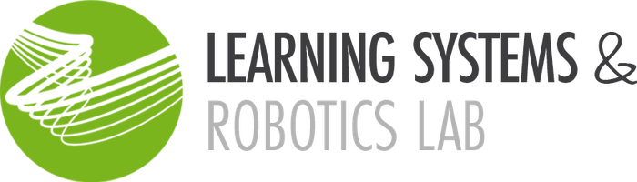
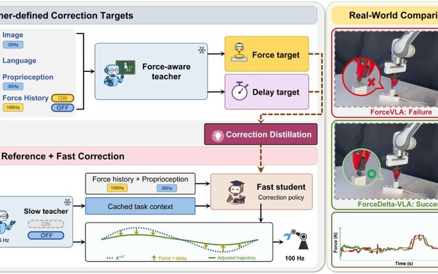
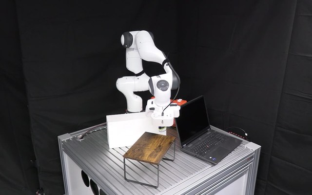
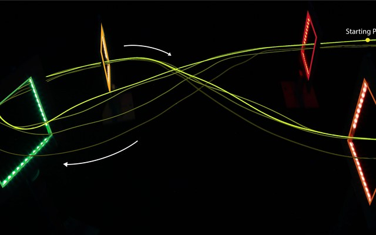

Robotics & safe control
Haocheng Zhao
I'm a PhD student at the Learning Systems and Robotics Lab at TUM, advised by Prof. Angela P. Schoellig.
I work on safe human-robot interaction: how a robot can act in cluttered, dynamic and partially known environments while keeping formal safety guarantees. My current focus is on safety filters built on control barrier functions and on the geometric representations that make them reliable and fast enough for real-time use.
Previously, I completed my Master's in Mechatronics and Robotics at TUM, where I also worked on learning-based model predictive control for agile quadrotor flight.


Latest news
Our work ForceDelta-VLA, on force-conditioned action corrections for contact-rich manipulation, is on arXiv.
Our work SQ-CBF: Signed Distance Functions for Reliable Superquadric-Based Safety Filtering is on arXiv and accepted to IEEE RA-L. Check out the project page.
Our work Improving Drone Racing Performance Through Iterative Learning MPC is accepted for oral presentation at IROS 2025.
Publications
Google Scholar ↗-

-

SQ-CBF: Signed Distance Functions for Reliable Superquadric-Based Safety Filtering
IEEE Robotics and Automation Letters (RA-L), 2026
-

Improving Drone Racing Performance Through Iterative Learning MPC
IEEE/RSJ International Conference on Intelligent Robots and Systems (IROS), 2025 · oral presentation
Students & collaborators
Let's work together.
I'm open to thesis, guided research and research collaborations on safe robot control and manipulation. If you'd like to work with me, send a short email with your interests and CV.